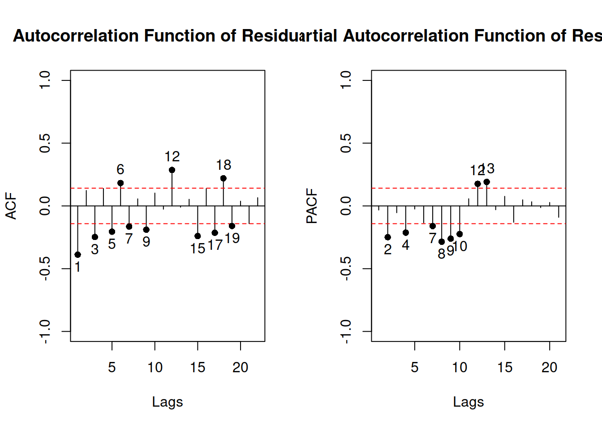
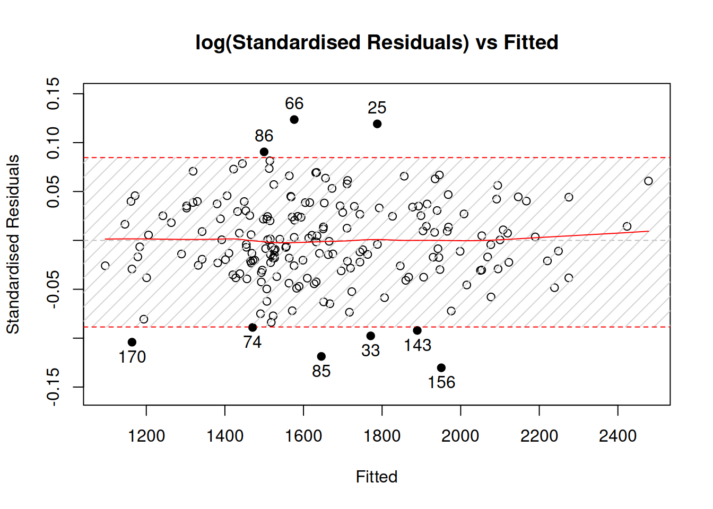
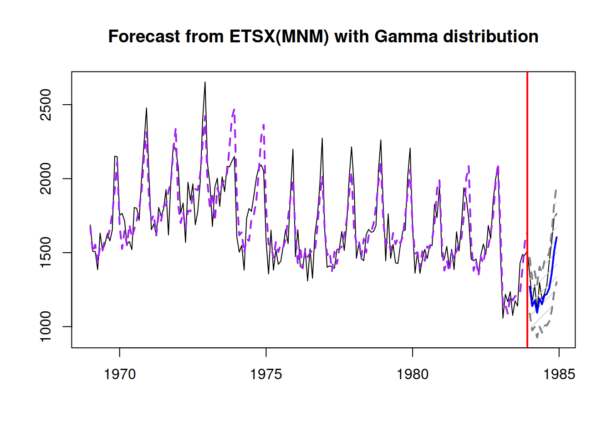
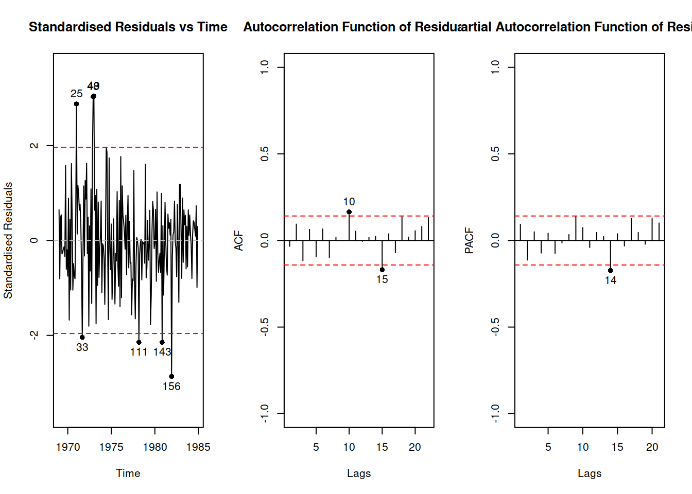
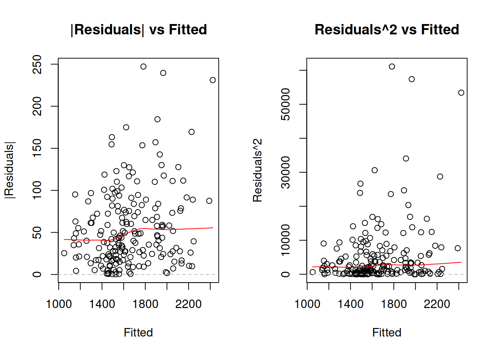

14.3 The full ADAM model
Uniting demand occurrence with the demand sizes parts of the model, we can now discuss the full iETS model, which in the most general form can be represented as: \[\begin{equation} \begin{aligned} & y_t = o_t z_t , \\ & {z}_{t} = w_z(\mathbf{v}_{z,t-\mathbf{l}}) + r_z(\mathbf{v}_{z,t-\mathbf{l}}) \epsilon_{z,t} \\ & \mathbf{v}_{z,t} = f_z(\mathbf{v}_{z,t-\mathbf{l}}) + g_z(\mathbf{v}_{z,t-\mathbf{l}}) \epsilon_{z,t} \\ & \\ & o_t \sim \text{Bernoulli} \left(p_t \right) , \\ & p_t = f_p(\mu_{a,t}, \mu_{b,t}) \\ & a_t = w_a(\mathbf{v}_{a,t-\mathbf{l}}) + r_a(\mathbf{v}_{a,t-\mathbf{l}}) \epsilon_{a,t} \\ & \mathbf{v}_{a,t} = f_a(\mathbf{v}_{a,t-\mathbf{l}}) + g_a(\mathbf{v}_{a,t-\mathbf{l}}) \epsilon_{a,t} \\ & b_t = w_b(\mathbf{v}_{b,t-\mathbf{l}}) + r_b(\mathbf{v}_{b,t-\mathbf{l}}) \epsilon_{b,t} \\ & \mathbf{v}_{b,t} = f_b(\mathbf{v}_{b,t-\mathbf{l}}) + g_b(\mathbf{v}_{b,t-\mathbf{l}}) \epsilon_{b,t} \end{aligned} , \tag{14.25} \end{equation}\] where the elements of the demand size and demand occurrence parts have been defined in Sections 6 and 14.1.4 respectively. The model (14.25) can also be considered as a more general one to the conventional ADAM ETS and ARIMA models. And if the probability of occurrence \(p_t\) is equal to one for all observations, then the model reverts to them.
Depending on the specific model for each part and restrictions on \(\mu_{a,t}\) and \(\mu_{b,t}\), we might have different types of iETS models. In order to distinguish one model from another, we introduce the notation of iETS models of the form “iETS(demand sizes model)\(_\text{type of occurrence}\)(model A type)(model B type).” For example, in the iETS(M,N,N)\(_G\)(A,N,N)(M,M,N) the first brackets say that ETS(M,N,N) was applied to the demand sizes, the underscore letter points out that this is the “general probability” model, which has ETS(A,N,N) for the model A and ETS(M,M,N) for the model B. If only one variable is needed (either \(a_t\) or \(b_t\)), then the redundant brackets are dropped, and the notation is simplified, for example, to: iETS(M,N,N)\(_O\)(M,N,N). If the same type of model is used for both demand sizes and demand occurrence, then the second brackets can be dropped as well, simplifying this further to: iETS(M,N,N)\(_O\) (odds ratio model with ETS(M,N,N) for all parts). All these models are implemented in adam() function for smooth package in R.
Similar notations and principles can be used for models based on ARIMA. Note that oARIMA is not yet implemented, but in theory a model like iARIMA(0,1,1)\(_O\)(0,1,1) could be constructed in ADAM framework.
14.3.1 Maximum Likelihood Estimation
While there are different ways of estimating the parameters of ADAM model (14.25), it is worth focusing on likelihood estimation. The log-likelihood of the model should consist of several parts:
- The PDF of demand sizes part of the model, when demand occurs;
- The probability of occurrence;
- The probability of inoccurrence.
When demand occurs the likelihood is: \[\begin{equation} \mathcal{L}(\boldsymbol{\theta}, \lambda_\epsilon | y_t, o_t=1) = p_t f_z(z_t | \mathbf{v}_{z,t-\mathbf{l}}) , \tag{14.26} \end{equation}\] while in the opposite case it is: \[\begin{equation} \mathcal{L}(\boldsymbol{\theta}, \lambda_\epsilon | y_t, o_t=0) = (1-p_t) f_z(z_t | \mathbf{v}_{z,t-\mathbf{l}}). \tag{14.27} \end{equation}\] Based on the equations (14.26) and (14.27), we can summarise the likelihood for the whole sample of \(T\) observations: \[\begin{equation} \mathcal{L}(\boldsymbol{\theta}, \lambda_\epsilon | \textbf{Y}) = \prod_{o_t=1} p_t \prod_{o_t=0} (1-p_t) \prod_{t=1}^T f_z(z_t | \mathbf{v}_{z,t-\mathbf{l}}) , \tag{14.28} \end{equation}\] or in logarithms: \[\begin{equation} \ell(\boldsymbol{\theta}, \lambda_\epsilon | \textbf{Y}) = \sum_{t=1}^T f_z(z_t | \mathbf{v}_{z,t-\mathbf{l}}) + \sum_{o_t=1} \log(p_t) + \sum_{o_t=0} \log(1-p_t), \tag{14.29} \end{equation}\] where \(f_z(z_t | \mathbf{v}_{z,t-\mathbf{l}})\) can be substituted by a likelihood of the assumed distribution from the list of candidates in Section 12.1 (substituting \(T\) in formulae in Tables 12.1 and 12.2 by \(T_1\)). The main issue in calculating the likelihood (14.29) is that the demand sizes are not observable when \(o_t=0\). This means that we cannot calculate the likelihood using the conventional approach, we need to use something else. Svetunkov and Boylan (2019) proposed using Expectation Maximisation (EM) algorithm for this purpose, which is typically done in the following stages:
- Take Expectation of the likelihood;
- Maximise it with the obtained parameters;
- Go to (1) with the new set of parameters if the likelihood has not converged to maximum.
A classical example with EM is when there are several samples with different parameters and we need to split them, but we do not know where specific observations belongs to and what is the probability that each observation belongs to one of the groups. In our context, it is a slightly different idea: we know probabilities, but we do not observe some of demand sizes. If we take the expectation of (14.29) with respect to the unobserved demand sizes, we will get: \[\begin{equation} \begin{aligned} \ell(\boldsymbol{\theta}, {\lambda}_\epsilon | \textbf{Y}) & = \sum_{o_t=1} \log f_z \left(z_{t} | \mathbf{v}_{z,t-\mathbf{l}} \right) + \sum_{o_t=0} \text{E} \left( \log f_z \left(z_{t} | \mathbf{v}_{z,t-\mathbf{l}} \right) \right) \\ & + \sum_{o_t=1} \log(p_t) + \sum_{o_t=0} \log(1- p_t) \end{aligned}. \tag{14.30} \end{equation}\] Luckily, the expectation in (14.30) is known in statistics as “Differential Entropy” (it is actually negative differential entropy in the formula above). It will differ from one case to another, depending on the assumed demand sizes distribution. Table 14.1 summarises differential entropies for the distributions used in ADAM.
| Assumption | Differential Entropy | |
|---|---|---|
| Normal | \(\epsilon_t \sim \mathcal{N}(0, \sigma^2)\) | \(\frac{1}{2}\left(\log(2\pi\sigma^2)+1\right)\) |
| Laplace | \(\epsilon_t \sim \mathcal{Laplace}(0, s)\) | \(1+\log(2s)\) |
| S | \(\epsilon_t \sim \mathcal{S}(0, s)\) | \(2+2\log(2s)\) |
| Generalised Normal | \(\epsilon_t \sim \mathcal{GN}(0, s, \beta)\) | \(\beta^{-1}-\log\left(\frac{\beta}{2s\Gamma\left(\beta^{-1}\right)}\right)\) |
| Asymmetric Laplace | \(\epsilon_t \sim \mathcal{ALaplace}(0, s, \alpha)\) | \(1+\log(2s)\) |
| Inverse Gaussian | \(1+\epsilon_t \sim \mathcal{IG}(1, s)\) | \(\frac{1}{2}\left(\log \pi e s -\log(2) \right)\) |
| Gamma | \(1+\epsilon_t \sim \mathcal{\Gamma}(s^{-1}, s)\) | \(s^{-1} + \log \Gamma\left(s^{-1} \right) + \left(1-s^{-1}\right)\psi\left(s^{-1}\right)\) |
| Log Normal | \(1+\epsilon_t \sim \mathrm{log}\mathcal{N}\left(-\frac{\sigma^2}{2}, \sigma^2\right)\) | \(\frac{1}{2}\left(\log(2\pi\sigma^2)+1\right)-\frac{\sigma^2}{2}\) |
The majority of formulae for differential entropy in Table 14.1 are taken from Wikipedia (2021) with the exclusion of the one for \(\mathcal{IG}\), which was derived by Mudholkar and Tian (2002). These values can be inserted instead of the \(\text{E} \left( \log f_z \left(z_{t} | \mathbf{v}_{z,t-\mathbf{l}} \right) \right)\) in the formula (14.30), leading to the expected likelihood for respective distributions. Luckily, the EM process in our specific situation does not need to be iterative - the obtained likelihood can then be maximised directly by changing the values of parameters \(\boldsymbol{\theta}\). It is also possible to derive analytical formulae for parameters of some of distributions based on (14.30) and the values from Table 14.1. For example, in case of \(\mathcal{IG}\) the estimate of scale parameter is: \[\begin{equation} \hat{s} = \frac{1}{T} \sum_{o_t=1}\frac{e_t^2}{1+e_t}. \tag{14.31} \end{equation}\] In fact, it can be shown that the likelihood estimates of scales for different distributions correspond to the conventional formulae from Section 12.1, but with the summation over \(o_t=1\) instead of all the observations. Note however that the division in (14.31) is done by the whole sample \(T\). This implies that the estimate of scale will be biased, similarly to the classical bias of the sample variance (2.1). However, in the full ADAM model, the estimate of scale is biased not only in sample, but asymptotically as well, implying that with the increase of the sample size it will be consistently lower than needed. This is because the summation is done over the non-zero values, while the division is done over the whole sample. This proportion of non-zeroes will impact the scale in (14.31), deflating its value. The only situation, when the bias will be reduced is when the probabilty of occurrence reaches 1 (demand on product becomes regular). Still, the value (14.31) will maximise the expected likelihood (14.30) and is useful for inference. However, if one needs to construct prediction intervals, this bias needs to be addressed, which can be done using the following correction: \[\begin{equation} \hat{s}^\prime = \frac{T}{T_1-k} \hat{s}, \tag{14.32} \end{equation}\] where \(k\) is the number of all estimated parameters.
The final thing to note is that all the iETS models estimated via the maximisation of likelihood will produce consistent, efficient, but positively biased estimates of the smoothing parameters (see explanation in Svetunkov and Boylan, 2019). Given the connection between MLE for some distributions and MSE (see Section 12.2.1 for detail), this also implies that such forecasting methods as Croston (Croston, 1972) and TSB (Teunter et al., 2011) would also result in positively biased estimates of parameters, when estimated via the minimisation of MSE.
14.3.2 Examples of application
In order to see how ADAM works on intermittent data, we consider the same example from the Section 14.1. We remember that in that example both demand occurrence and demand sizes increase over time, meaning that we can try the model with trend for both parts:
plot(y)
This can be done using adam() function from smooth package, defining the type of occurrence to use. We will try several options and select the one that has the lowest AICc:
adamModelsiETS <- vector("list",4)
adamModelsiETS[[1]] <- adam(y, "MMN", occurrence="odds-ratio",
h=10, holdout=TRUE)
adamModelsiETS[[2]] <- adam(y, "MMN", occurrence="inverse-odds-ratio",
h=10, holdout=TRUE)
adamModelsiETS[[3]] <- adam(y, "MMN", occurrence="direct",
h=10, holdout=TRUE)
adamModelsiETS[[4]] <- adam(y, "MMN", occurrence="general",
h=10, holdout=TRUE)## Warning: You have defined bounds='none'. This is dangerous and might lead to
## an unstable model or even break the function. Hopefully, you know what you are
## doing :).## Warning: Unreasonable values of states were produced in the estimation. So, we substituted them with the previous values.
## This is because the model exhibited explosive behaviour.adamModelsiETSAICcs <- setNames(sapply(adamModelsiETS,AICc),
c("odds-ratio","inverse-odds-ratio","direct","general"))
adamModelsiETSAICcs## odds-ratio inverse-odds-ratio direct general
## 333.3965 336.6216 340.2819 365.8195Based on this, we can see that the model with odds-ratio has the lowest AICc. We can see how the model has approximated the data and produced forecasts for the holdout:
i <- which.min(adamModelsiETSAICcs)
plot(adamModelsiETS[[i]],7)
We can explore the demand occurrence part of this model the following way:
adamModelsiETS[[i]]$occurrence## Occurrence state space model estimated: Odds ratio
## Underlying ETS model: oETS[O](MMN)
## Smoothing parameters:
## level trend
## 0.0079 0.0023
## Vector of initials:
## level trend
## 0.5256 0.9673
##
## Error standard deviation: 1.4226
## Sample size: 110
## Number of estimated parameters: 4
## Number of degrees of freedom: 106
## Information criteria:
## AIC AICc BIC BICc
## 105.7196 106.1006 116.5216 117.4169plot(adamModelsiETS[[i]]$occurrence)
Depending on the generated data, there might be issues in the ETS(M,M,N) model for demand sizes, if the smoothing parameters are large. So, we can try out the ADAM logARIMA(0,2,2) to see how it compares with this model. Given that ARIMA is not yet implemented for the occurrence part of the model, we need to construct it separately and then use in adam():
oETSModel <- oes(y, "MMN", occurrence=names(adamModelsiETSAICcs)[i],
h=10, holdout=TRUE)
adamModeliARIMA <- adam(y, "NNN", occurrence=oETSModel, orders=c(0,2,2),
distribution="dlnorm", h=10, holdout=TRUE)
adamModeliARIMA## Time elapsed: 0.05 seconds
## Model estimated using adam() function: iARIMA(0,2,2)
## Occurrence model type: Odds ratio
## Distribution assumed in the model: Mixture of Bernoulli and Log Normal
## Loss function type: likelihood; Loss function value: 160.1414
## ARMA parameters of the model:
## MA:
## theta1[1] theta2[1]
## -1.1845 0.1845
##
## Sample size: 110
## Number of estimated parameters: 5
## Number of degrees of freedom: 105
## Number of provided parameters: 4
## Information criteria:
## AIC AICc BIC BICc
## 428.0025 428.5794 441.5049 442.8608
##
## Forecast errors:
## Bias: -81.047%; sMSE: 323.818%; rRMSE: 1.131; sPIS: 6052.174%; sCE: -1409.679%plot(adamModeliARIMA,7)
Comparing the iARIMA model with the previous iETS based on AIC would not be fair, because as soon as the occurrence model is provided to adam(), he does not count the parameters estimated in that part towards the overal number of estimated parameters. In order to make the comparison fair, we need to estimate ADAM iETS in the following way:
adamModelsiETS[[i]] <- adam(y, "MMN", occurrence=oETSModel,
h=10, holdout=TRUE)
adamModelsiETS[[i]]## Time elapsed: 0.03 seconds
## Model estimated using adam() function: iETS(MMN)
## Occurrence model type: Odds ratio
## Distribution assumed in the model: Mixture of Bernoulli and Inverse Gaussian
## Loss function type: likelihood; Loss function value: 108.55
## Persistence vector g:
## alpha beta
## 0.1328 0.0055
##
## Sample size: 110
## Number of estimated parameters: 5
## Number of degrees of freedom: 105
## Number of provided parameters: 4
## Information criteria:
## AIC AICc BIC BICc
## 324.8195 325.3965 338.3219 339.6779
##
## Forecast errors:
## Bias: -78.977%; sMSE: 236.147%; rRMSE: 0.966; sPIS: 5435.642%; sCE: -1161.671%plot(adamModelsiETS[[i]],7)
Comparing information criteria, the iETS model is more appropriate for this data. But this might be due to a different distributional assumptions and difficulties estimating ARIMA model. If you want to experiment more with ADAM iARIMA, you might try fine tuning it for the data either by increasing the maxeval or changing the initialisation, for example:
adamModeliARIMA <- adam(y, "NNN", occurrence=oETSModel, orders=c(0,2,2),
distribution="dinvgauss", h=10, holdout=TRUE, initial="back")
adamModeliARIMA## Time elapsed: 0.05 seconds
## Model estimated using adam() function: iARIMA(0,2,2)
## Occurrence model type: Odds ratio
## Distribution assumed in the model: Mixture of Bernoulli and Inverse Gaussian
## Loss function type: likelihood; Loss function value: 117.2087
## ARMA parameters of the model:
## MA:
## theta1[1] theta2[1]
## -1.8437 0.8526
##
## Sample size: 110
## Number of estimated parameters: 3
## Number of degrees of freedom: 107
## Number of provided parameters: 4
## Information criteria:
## AIC AICc BIC BICc
## 338.1370 338.3635 346.2385 346.7706
##
## Forecast errors:
## Bias: -69.515%; sMSE: 153.298%; rRMSE: 0.778; sPIS: 3210.109%; sCE: -737.671%plot(adamModeliARIMA,7)